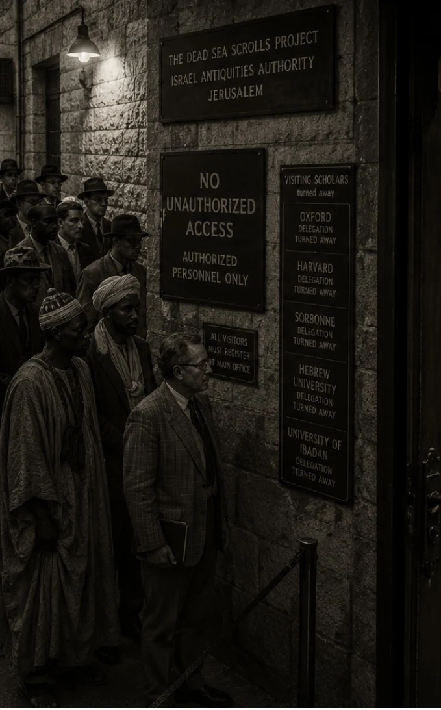

𐤉𐤄𐤅𐤄
ACR Search, The Covenant Concordance
Dead Sea Scrolls & The Orit Ge’ez, Digitally Compiled
A primary source research tool with a concordance component, the ancient texts, their documented history, and what was changed and why.
These primary sources belong to no institution, no denomination, and no people exclusively. They were preserved to be found. Anyone who seeks them is welcome here.
Semantic Thread Search
Search by word, theme, concept, or ancient root across 21,000+ passages from the full corpus.
NT Reverse Lookup
Enter any NT reference. See the primary source truth and the documented manipulation.
Root Search
Search by ancient Hebrew, Aramaic, or Ge'ez root. Bypass all translation layers entirely.
Suppressed Verse Library
Every DSS and Orit Ge'ez verse that directly contradicts later theological constructs.
Contradiction Revealer
DSS original alongside Masoretic variant alongside critical note. Three columns. No softening.
Original vs. Manipulated
Primary source texts alongside what was constructed from them. Manuscript evidence only.
Study Path
Enter a concept. Receive a guided sequence from foundational to advanced passages.
Research Journal
Save passages locally. Add notes. Export your research. Everything stored on-device.
Covenant for All Nations
DSS and Orit primary source texts on YHWH receiving all who obey. Biblical figures and communities from every background used in the covenant record.
Results
All
Foundational
Temporal
Moral
Historical
Eschatological
NT Lookup
Paul & Acts
Historical
Rabbinic
Rome
Origins
Orit Record
Covenant Chain
Historical Docs
Revelation Sources
One Creator
Enter a New Testament reference
Suppressed Verse Library
Every verse in the DSS and Orit Ge'ez that directly contradicts later theological constructs. Manuscript evidence only.
⤢ Tap to enlarge
The Dead Sea Scrolls Monopoly, Forty Years of Controlled Access
The most important primary-source discovery in history was held under exclusive control by a small team for four decades. This is the documented record of who controlled the access, and for how long.

⤢ Tap to enlargeThe Find and the Cartel
The scrolls were recovered from the Qumran caves between 1947 and 1956. Control of the unpublished manuscripts, above all the thousands of fragments from Cave 4, was handed to a small international team headquartered at the Ecole Biblique in Jerusalem, a Dominican Catholic institution, under Roland de Vaux. Access to the unpublished material was restricted to that team and to those it personally chose to admit.
Forty Years of Delay
For roughly four decades, scholars outside the team were refused access to the unpublished scrolls and even to the photographs. The international team, later led by John Strugnell, was overwhelmingly Euro-American, and it refused outside scholars, especially Semitic, non-Western, and independent researchers, even the sight of the fragments. Publication crawled, and a large share of the corpus remained unseen by the wider world into the late 1980s. The historian Geza Vermes called the delay "the academic scandal par excellence of the twentieth century."
How the Monopoly Broke, 1991
The lock was forced open in 1991, when the Huntington Library in California announced it would release its complete set of scroll photographs to any scholar who asked, and the Biblical Archaeology Society published a reconstruction of the withheld texts. Only then did the foundational evidence become fully available. For forty years, access to the primary sources this tool is built on was controlled by a handful of gatekeepers, and everyone else was told to wait.
Contradiction Revealer
DSS primary reading alongside Masoretic variant alongside critical note. No softening. Manuscript evidence stated plainly.
Paganism in Christianity
The pagan practices, symbols, statues, and festivals absorbed into institutional Christianity, measured against the primary sources. Traditions of men, not covenant. This is Christianity itself, not one denomination.
Racism and the Covenant
What the ancient Hebrew primary sources actually say about race, drawn only from the Dead Sea Scrolls, the Ge'ez Orit, and the Torah. The covenant condemns racism, centers an African people, and the racist "curse" was a later addition the texts never contained.
The Body, Receiver of Light and Sound
The Creator built the human body to take in frequency: light through the eye to the pineal, and sound and vibration through the whole body. This is documented biology, and it runs straight back to the primary sources, where creation itself begins with a voice and the covenant is marked by sound. Melanin is both the filter and the antenna.
Explore
Ancient City Walker
Three cities that shaped the covenant story — Yerushalayim, Waset (Luxor/Thebes), and Babylon. Each city shown as a schematic district map at its peak period. Tap any district to read what stood there and what the primary sources record about it.
Explore
Qumran Cave Explorer
Eleven caves cut into the cliffs above the Dead Sea. Between 1947 and 1956 they yielded over 900 manuscripts hidden for 2,000 years. Tap each cave to read what was found inside.
Explore
Interactive tools grounded in primary sources — the Dead Sea Scrolls, the Ge'ez Orit, and named archaeological records. Tap any tile to enter.
Explore
The Courtroom
Six claims placed before the evidence. Each exhibit is a named primary source — manuscript, inscription, papyrus, or genetic study. Select a case to begin.
Explore
The Diaspora Scatter
Three documented dispersions — 722 BCE Assyrian, 586 BCE Babylonian, 70 CE Roman — traced across Africa and into the world. Every destination sourced from named manuscripts, papyri, and archaeological records. Tap a tab to switch events. Tap a destination to see the source.
Explore
The Exodus Journey
Ten waypoints from Kemet to the Plains of Moab. Every event sourced from the Ge'ez Orit, the Dead Sea Scrolls, and named archaeological records. Tap a waypoint on the map or step through in order.
Explore
The 364-Day Solar Calendar
Documented in 1 Enoch 72–82 (the Astronomical Book), Jubilees 6:17–38, and 4QMMT. On this calendar every appointed time falls on the same day of the week, every year — by design. Jubilees 6:29–30 states this explicitly.
Explore
The Scroll Library
The primary-source archive — the Dead Sea Scrolls, the Ge'ez Orit canon, and the texts that were suppressed. Tap any scroll to open it.
Explore
Uncover the Text
Peel back the layers. Each passage starts with what the received text says, then shows what changed and when, then reaches the primary sources — the Dead Sea Scrolls and the Ge'ez Orit. The manipulations are datable, named, and specific.
Search by ancient root. Each root queries the concordance directly, bypassing all translation layers.
Study Path Generator
Enter a concept or theme. Receive a guided reading sequence from foundational to advanced, ordered Foundational through Eschatological.
Concept Map
Each circle is a search term you ran. Circles of the same color share a topic thread. Lines connect related searches.
Tap a circle to re-run that search. Long-press to delete it.
𐤉𐤄𐤅𐤄
How to Use ACR Search
This is a research tool built on the primary ancient texts, the Dead Sea Scrolls and the Orit Ge'ez. Every result traces back to physical manuscript evidence. Use the sections below to learn each feature. Tap the speaker button on any section to hear it read aloud.
People arrive here from every background and tradition. These texts are not the property of any institution or lineage. They were written for those with eyes to find them. The search bar is the most direct path to that knowledge — type any question and the primary source answers directly, with no institutional filter between you and the text. Wherever you are starting from, you are welcome at the primary source.
Nine Findings Worth Knowing
1
The Similitudes of Enoch are absent from all 11 Qumran caves. Every other section of 1 Enoch was found at Qumran — the Book of Watchers, the Astronomical Book, the Epistle of Enoch, the Book of Giants — each with multiple manuscript witnesses across the 11 caves. The Similitudes (chapters 37–71), which contain the "Son of Man" figure that became central to later New Testament theology, were not found in any cave. Zero witnesses. Every other major DSS book is represented. The Similitudes alone are not. That is not a random gap.
2
One letter in Psalm 22:16 turns a complete sentence into a grammatical fragment — and the oldest manuscript has the complete version.
The Dead Sea Scrolls (11QPsa, written around 150 BCE) read: "they pierced my hands and my feet." The Hebrew word is ka'aru — a verb meaning "they dug" or "they pierced." It is a grammatically complete sentence: subject, verb, object. It stands on its own.
The Masoretic text — compiled by Rabbinic scribes between 600 and 1000 CE — reads: "like a lion, my hands and my feet." The Hebrew word there is ka'ari — meaning "like a lion." It is a noun comparison with no verb. "Like a lion my hands and my feet" does not parse as a complete sentence. It is grammatically broken, and translators have been trying to explain the awkwardness of it for centuries.
The difference between the two readings is a single letter: aleph (א) vs. vav (ו). In ancient Hebrew script, those two letters are visually close. The DSS version — written over a thousand years before the Masoretic text — produces a grammatically complete and meaningful sentence. The later institutional text produces a phrase that does not work.
The New Testament quotes this verse as a prophecy of crucifixion. That reading only holds if the DSS version is the original. The physical manuscript evidence — the oldest we have — supports the piercing reading. The later text, compiled under Rabbinic institutional authority, does not.
The Dead Sea Scrolls (11QPsa, written around 150 BCE) read: "they pierced my hands and my feet." The Hebrew word is ka'aru — a verb meaning "they dug" or "they pierced." It is a grammatically complete sentence: subject, verb, object. It stands on its own.
The Masoretic text — compiled by Rabbinic scribes between 600 and 1000 CE — reads: "like a lion, my hands and my feet." The Hebrew word there is ka'ari — meaning "like a lion." It is a noun comparison with no verb. "Like a lion my hands and my feet" does not parse as a complete sentence. It is grammatically broken, and translators have been trying to explain the awkwardness of it for centuries.
The difference between the two readings is a single letter: aleph (א) vs. vav (ו). In ancient Hebrew script, those two letters are visually close. The DSS version — written over a thousand years before the Masoretic text — produces a grammatically complete and meaningful sentence. The later institutional text produces a phrase that does not work.
The New Testament quotes this verse as a prophecy of crucifixion. That reading only holds if the DSS version is the original. The physical manuscript evidence — the oldest we have — supports the piercing reading. The later text, compiled under Rabbinic institutional authority, does not.
3
The oldest known mention of YHWH is carved in stone in Sudan, 1400 BCE. The Soleb Temple inscription in what is now Sudan is the earliest extrabiblical record of the divine name — predating the earliest Masoretic manuscripts by nearly 2,000 years. The second oldest known mention is also in Africa, at Amarah-West. The geographic origin of the covenant name is African, documented in stone. This is not interpretation — it is inscription.
4
Devarim 28 describes the Transatlantic Slave Trade with documentary precision. Ships going to Egypt (verse 68), a fierce nation whose language is unknown (verse 49), identity and name stripped, sold as slaves with no buyer, never to return. These are not general curses — they are specific conditions that match the documented history of the African diaspora in a way no other historical event does. The passages were written over two thousand years before the events they describe.
5
Herodotus documented the physical appearance of the people of that region firsthand in 450 BCE. The Greek historian describes the people of the corridor between Africa and the Levant as physically identical to Ethiopians — dark skin and woolly hair — as a direct eyewitness comparison, not a theological position. This was written before any institutional interest existed in reframing who those people were.
6
The Bereshit 15 covenant was made entirely by YHWH, unilaterally, while Avraham slept. A smoking firepot and burning torch — representing the divine presence — passed between the divided animals while Avraham was in a deep sleep. He did not walk through. He made no oath. The covenant was sealed without requiring anything from him. This makes it structurally unconditional — a covenant YHWH made with himself on behalf of Avraham's descendants. The primary source text states this directly. It is almost never taught this way.
7
Three independent DSS sources mandate a 364-day solar calendar — and the Rabbinic lunar calendar moves the appointed times off those dates. The Book of Jubilees, 1 Enoch's Astronomical Book, and the Qumran Community Rule all require a solar calendar of 364 days, on which the Mo'edim fall on fixed days each year. The Rabbinic lunar calendar, introduced centuries later, shifts those appointed times annually. By the primary source calendar, the Mo'edim and the Rabbinic calendar's observance dates do not align. The DSS community considered the lunar calendar a corruption of the original covenant mandate.
8
The Ge'ez Orit preserved — as canonical scripture — texts that Western institutions excluded. The Ethiopian Orit contains 1 Enoch, Jubilees, and other texts that the Qumran community also treated as authoritative, preserved intact for over 2,000 years in Ethiopian tradition. These books were not lost — they were excluded by the councils and institutions that controlled Western canonical selection. The Ge'ez Orit predates the Masoretic text decisions and represents an independent preservation of the primary source record outside of European or Rabbinic institutional control.
9
The War Scroll (1QM), written in the 1st century BCE, names what the 1947-1948 sequence documents — and the scroll came out of the earth the year before the competing land claim was filed. The War Scroll describes a final conflict between the Sons of Light — the covenant community, the African Hebrew Yahad of YHWH — and the Sons of Darkness: the Kittim and the forces of Belial, identified by what they do — the powers that use dominant institutional structures to control territory the covenant people are excluded from, to control access to the covenant framework, and to oppose the covenant people's return. The 1947-1948 sequence: the physical primary source evidence of the actual covenant community surfaces from Cave 1 in early 1947. The UN Partition Plan is passed in November 1947 — same year. The State of Israel is declared in May 1948 by Ashkenazi leadership descended from documented 8th-century CE Khazarian converts, not from the covenant lineage in any primary source. The scrolls are then controlled for 44 years by a European scholarly monopoly under the claiming institution's authority. The suffering used to build international backing for the 1948 claim was Ashkenazi European suffering. The actual covenant people's 400-year displacement — Devarim 28:68, captivity by ship from the African covenant territories — was processed by those same Western institutions as colonial administration. The Beta Israel were excluded from the Law of Return until 1975, then required on arrival to undergo Rabbinical conversion: the oldest documented primary source covenant community required to submit to gatekeeping built by the Khazarian converts. The War Scroll named this pattern in the 1st century BCE. The covenant community sealed it in Cave 1 in 68 CE. It came out of the earth in 1947. The institution that claimed the land in 1948 and controlled that scroll for 44 years is the covenant's opposition in the primary source's own terms.
Each of these findings is documented in the site. Use Contradiction Revealer for finding 2, NT Lookup Orit Record tab for findings 3, 8, and 9, Suppressed Verse Library for finding 1, and the Covenant Chain tab in NT Lookup for finding 4. Finding 9 is in the Orit Record tab under Who Controls the Covenant Claim — The 1947 Plot section. The primary source evidence for every point is accessible directly from the search bar.
Start Here, New to the Texts
1
If you are new to the Dead Sea Scrolls and the Orit Ge'ez, begin with the search bar. Type a word you already know — covenant, light, justice, spirit. Let the primary source show you what those words meant before centuries of institutional translation.
2
Tap Study Path and type covenant. This gives you a guided sequence of 12 primary source passages — foundational first, then deeper. It is the fastest way to orient yourself in the corpus without needing prior knowledge.
3
Tap Verse DNA on any result that interests you. This opens the manuscript record — where it was physically found, how old it is, how many independent scrolls confirm it, and what the original root words say. The physical evidence is the foundation.
4
When you are ready to go deeper, use NT Lookup to compare any passage from the tradition you came from against what the primary source actually says. Tap Covenant for All Nations on the home screen to read what the primary source record says about who the covenant includes.
Tip: No prior knowledge of Hebrew, Aramaic, or Ge'ez is needed. Every result shows English text with manuscript evidence. Start with what you know and let the primary source take you further.
Tip: Images throughout the site can be tapped to enlarge full-screen. Tap the enlarged image again to close it.
Search, Finding Passages
1
Type any word, theme, or concept into the search bar at the top. Try words like covenant, light, judgment, or raz.
2
Results come from over 21,000 passages across every volume in the corpus. They are ranked by how closely they match your search and by how many manuscripts confirm them.
3
Use the thread filter pills below the search bar to narrow results by category: Foundational, Temporal, Moral, Historical, or Eschatological.
4
Each result card shows the manuscript source and date range. That is the physical evidence behind the text.
5
Tap the search bar when it is empty to see your recent searches. Tap any entry to run it again. Saves your last 20 searches automatically.
6
On any result card, tap Copy to send the passage reference, manuscript, witness count, and full text to your clipboard, ready to paste into notes.
7
Swipe right on a result card to save it to your Journal. Swipe left to open Verse DNA. The swipe detects horizontal intent so it does not interfere with normal scrolling.
Verse DNA, Full Fingerprint of a Passage
1
On any search result, tap Verse DNA. This opens the full fingerprint of that passage.
2
You will see the thread tags, the category the passage belongs to, and the ancient roots, the original Hebrew, Aramaic, or Ge'ez root words present in it.
3
The witness count tells you how many independent manuscripts confirm this passage. Higher is stronger evidence.
4
If the passage has a manipulation flag, it means this text was later appropriated or misrepresented by another tradition. The NT references are listed.
5
Tap any root chip to open the Root Etymology Panel, a sheet showing the root's full definition, language, and semantic range. Tap "Search all passages" inside that panel to run the root search.
6
Scroll to the bottom of Verse DNA to see More from this Scroll, other passages from the same physical manuscript that share a thread or root with the one you are reading.
Tip: More from this Scroll keeps you in manuscript context, it shows what else is on the same physical document, not just thematic matches from across the corpus.
Root Search, Bypassing Translation
1
Tap Root Search in the top navigation. This bypasses all English translation and searches by the original ancient root word.
2
Tap any root chip, for example Raz (mystery) or Ruach (spirit). Every passage in the corpus tagged with that root will appear.
3
This is useful when you want to see every place a concept appears across the full corpus regardless of how it was translated into English.
Tip: Root Search is the most direct path to the primary source. No translator's interpretation stands between you and the text.
NT Lookup, Nine Research Tabs
1
NT Lookup tab, Enter any New Testament reference such as John 1:1 or Matthew 1:23. The result shows authorship evidence, oldest manuscript, what the DSS primary source actually says, the documented manipulation, any Greco-Roman parallel, and a plain verdict. Tap the pre-loaded pills to jump to common entries.
2
Paul & Acts tab, Documents Paul's letters as the earliest NT writings (49-62 CE, predating all four gospels). Paul describes receiving his gospel through personal revelation, not from any eyewitness. Acts contradicts Paul's own letters on multiple points. The figure at the center of Paul's theology is a theological construct, no independent historical source confirms the gospel narrative.
3
Historical tab, Examines the secular sources the NT tradition has cited to claim a historical basis for its invented figure (Philo and Josephus), the pre-existing parallel traditions that predate the NT by centuries, missing administrative records, the gospel authorship evidence, and how the Trinity was constructed through politically convened councils over 130 years.
4
Rabbinic tab, DSS vs Masoretic divergences with manuscript evidence for each, Talmudic departures from primary sources, and the full mechanics of YHWH's name removal: 6,828 occurrences replaced through Rabbinic oral substitution, Septuagint Kyrios, Vulgate Dominus, and English LORD, the chain that created the theological merge between YHWH and "the Lord Jesus Christ."
5
Rome tab, Post-Nicaea doctrines with no primary source basis (Trinity, Immaculate Conception, Papal Infallibility, Purgatory, and others), each with the council date and verdict; the 40-year suppression of the Dead Sea Scrolls by a Catholic institution from 1952 to 1991; who built the Bibles the world uses; and the false witchcraft accusations against covenant-keeping communities. The pagan practices absorbed into Christianity now have their own Paganism pill in the top navigation, described in its own guide section below.
6
Origins tab, How the name Yeshua became Jesus through Greek and Latin. Paul's gospel vs the Jerusalem assembly. The Synoptic Problem and gospel dating. Septuagint prophecy fabrication with nine documented cases, including a full breakdown of Yeshayahu 53, the physical evidence of 1QIsa-a (125-100 BCE), the six explicit servant=Yisra'el identifications the church severed, the lamo plural pronoun the church translation hid, and why the Qumran community never applied this chapter to any individual. The African origins of the theological framework (Ausar/Osiris 2400 BCE, Ma'at 3100 BCE, Heru/Horus) and how Rome took that framework, stripped its origin, and reimposed it. The New Covenant as a geopolitical mechanism for covenant dispossession.
7
Orit Record tab, The most complete section. Opens with "The Geography Was Never Separate", six primary source proofs that the ancient covenant geography is African: Nubian tectonic plate, the term "Middle East" coined in 1902, Herodotus 450 BCE, Nabta Playa, Meroitic writing system, and the Afro-Asiatic language family. Covers the Beta Israel as the living primary source (2,000+ years of pure YHWH monotheism), the YHWH Inscription Timeline in Africa (Soleb 1400 BCE through DSS 250 BCE), other ancient African Hebrew communities, the solar calendar mandate, Jesuit infiltration of Ethiopia edict by edict, the Similitudes of Enoch, what the DSS Mashiach actually was, why the ancient African Hebrews never served any false deity, how all Christian denominations are Roman theological splits, and a dedicated section, "Who Controls the Covenant Claim", documenting the Rabbinical system: the post-70 CE institutional timeline, the Yavneh Council founded under Roman authorization, the Talmudic geirut conversion mechanism, the Curse of Ham as a Talmudic addition absent from all primary sources, the Khazar conversion (Khazar Correspondence, King Joseph, Shlomo Sand, Eran Elhaik), the genetic contradiction showing the Cohen Modal Haplotype resides in African communities, and the two-system convergence points where Roman Christianity and Rabbinical Judaism agree against African lineage populations. A dedicated section, The 1947 Plot, documents the final institutional layer of the same erasure: the Balfour Declaration (1917) issued by the same British Empire that ran the Transatlantic Slave Trade and convened the Berlin Conference, promising the covenant land to an Ashkenazi-led European Zionist movement with no African covenant community consulted; the 1947-1948 sequence in which the primary source scrolls surfaced from Cave 1 and an institution whose leadership descended from documented 8th-century CE Khazarian converts claimed the covenant land the following year; the scrolls then suppressed for 44 years under a European scholarly monopoly operating under the claiming institution's authority; the suffering holy people narrative documenting how Ashkenazi European suffering was used as political capital by the same Western institutions that processed the actual covenant people's Devarim 28:68 displacement as colonial administration; the Law of Return as the Talmudic geirut mechanism applied to land access, the Beta Israel excluded until 1975 and on arrival required to submit to Rabbinical conversion despite their practice predating the Rabbinical system by two millennia; and the War Scroll (1QM) framework, the primary source the covenant community sealed in Cave 1 in 68 CE, which identifies the forces opposing the covenant people's return as Sons of Darkness — identified by function, not ethnicity: the powers that use institutional authority to control the covenant framework and oppose its people's restoration. The covenant community wrote this in the 1st century BCE. The scroll came out of the earth in 1947. The institution that claimed the land in 1948 and controlled that scroll for 44 years is documented in the primary source's own text as functioning in the role the covenant community assigned to the covenant's opposition. Also includes a West Africa and the Gambia River Basin section: Richard Jobson\'s 1623 eyewitness account documenting the Marybucks as a Levitical parallel, Mosaic law retention across the Gambia River basin, Fula and Mandinka oral migration traditions, medieval Arabic historians on West African covenant communities, the Kati Archive of Timbuktu, and Semitic Y-chromosome lineages among the Fula and Sahel populations. A dedicated section, The Covenant Table, documents the primary source dietary framework from Vayikra 11 and Devarim 14, both DSS confirmed: the tahor (clean, permitted) and tamei (unclean, forbidden) categories — not the Rabbinical kosher system, which postdates the DSS by centuries; the two-condition land animal test (split hoof AND chews the cud, both required); the two-condition water creature test (fins AND scales, both required); the forbidden bird list; the blood removal requirement and how to meet it at home; what the milk-meat verse (Shemot 23:19, Shemot 34:26, Devarim 14:21, all DSS confirmed) actually says versus the full Rabbinical separation system built from it; and practical guidance for observing the complete primary source framework at a grocery store or restaurant without certification.
8
Covenant Chain tab, The full connected arc from primary source covenant to contemporary history. Bereshit 15, nine specific conditions YHWH declares to Avraham, every one mapping to the African diaspora: specific lineage, specific land, strangers in a land not their own, they will serve them, they will afflict them (name replacement, language destruction, family separation), four hundred years (1619-2019), YHWH judges the enslaving nation, come out with great possessions, fourth generation return. Devarim 28 blessings and curses, including the verses that describe the slave trade with documentary precision (ships, language unknown, fierce nation, scattered, identity stripped). Ha'azinu / 4QDeutq: the Dead Sea Scrolls reading of Devarim 32:43 with the divine council and vengeance terms the Masoretic removed. The 400-year timeline: 1619 to 2019, including what the full 400 years encompasses. UN Resolution A/80/L.48 (March 25, 2026), the first international institutional formal designation of the Transatlantic Slave Trade as the gravest crime against humanity: 123 nations for, USA/Israel/Argentina against, UK and all 27 EU nations abstained.
9
Covenant Practices tab, Two standalone practice sections. Tzitzit: what the fringes are, the full primary source commandment text (Bamidbar 15:37-41 and Devarim 22:12, both DSS attested), who wears them (men and women, based on the primary source), step-by-step how to wear them, the tekhelet (blue thread) and its source, and the covenant memory function. Shabbat: the commandment text (Shemot 20:8-11, DSS attested), the primary source basis for sunrise-to-sunrise observance (Yovelim, DSS calendrical texts), the specific Shabbat rules from the Damascus Document and Community Rule (seven rules with DSS citations), the suppression record from Constantine through the Jesuit edicts, and how tzitzit and Shabbat function together as a paired daily and weekly covenant framework. Also includes full Shabbat preparation guide (what to complete before Saturday sunrise) and all five services with complete DSS-attested prayer text: Preparation Prayer, Sunrise Service, Midday Service with covenant meal blessings, Evening Watch, and Sunday Sunrise Closing.
10
Historical Docs tab, Original documents, cartographic records, court papers, and first-person accounts. The 1807 Slave Bible: what was removed, what was kept, and what the removals confirm. The Seven Royal Cartographers (1656-1795 CE): Nicolas Sanson, Nicolas de Fer, John Senex, Gilles Robert de Vaugondy, Emanuel Bowen, Rigobert Bonne, and Samuel Dunn, seven consecutive royal court cartographers across France and Britain placing ancient Hebrew geography in Africa, each with their crown appointment and specific works named. Medieval Arabic Historians: Al-Zuhri, Al-Idrisi (Tabula Rogeriana 1154 CE), Al-Maqrizi, and Tarikh al-Sudan, independent non-partisan testimony on African Hebrew communities. The Kati Archive of Timbuktu: primary source family manuscripts documenting Hebraic lineage in West Africa. Royal African Company Manifests and Admiralty Prize Papers: crown and court records documenting the geographic origin of the enslaved population and conditions of transport. Olaudah Equiano\'s 1789 narrative: first-person testimony documenting Hebraic practices among his natal community in southeastern Nigeria. Richard Jobson\'s 1623 "The Golden Trade, or a Discovery of the River Gambra": the earliest detailed English-language account of covenant-parallel practices in the Gambia River basin, documenting the Marybucks as a Levitical priestly class, dietary laws, circumcision, new moon time-keeping, and elders at the gate, recorded by a commercial explorer with no Hebrew Israelite interpretive framework.
Tip: Scroll the tab bar left and right, all nine tabs are accessible by swiping the tab row horizontally.
Paganism, Traditions of Men
1
Tap Paganism in the top navigation. This is the full Traditions of Men record: the pagan practices, symbols, statues, and festivals absorbed into institutional Christianity, each measured against the primary sources that prohibit them.
2
This is Christianity itself, not only Catholicism. The opening entry documents that every Protestant and evangelical denomination split off from Rome and kept the Roman core: Sunday, the Trinity, Christmas, Easter, the cross, the Roman canon, and the invented figure.
3
The Spirit of YHWH versus the Christian Holy Spirit. Ruach as one word YHWH commissions to empower, distress, and deceive; the lying spirit sent against Ahab (1 Kings 22); speaking in tongues measured against true prophecy; and the Trinity voted in at Constantinople 381 CE.
4
Ritual forms borrowed from the nations. Communion, laying on of hands, praying in circles, the rosary, prayer to saints, holy water and infant baptism, the sign of the cross, genuflecting before images, votive candles, the halo, steeples and obelisks, and sunrise worship.
5
Graven images and statues. Statues of the invented Yeshua/Jesus figure modeled on Zeus, the Virgin Mary as the condemned Queen of Heaven (Yirmeyahu 7 and 44), the cross and Tammuz, and the Statue of Liberty as the goddess Libertas with the solar crown.
6
The pagan calendar. Sunday worship, Christmas and its tree (Yirmeyahu 10), Easter and Eostre, and Halloween and Samhain, each traced to its documented pagan festival.
7
The church structure itself as a complete pagan sequence — six new items. The raised church stage as the bamah (high place) condemned throughout Melachim: every king in the primary source was judged specifically for leaving the elevated worship platform standing, and the modern church stage — raised platform, professional mediator standing on it, offerings brought to its base — is that structure unchanged. Priestly robes traced directly to Roman Jupiter temple vestments and the bishop's mitre traced to the documented fish-head crown of Dagon's priesthood, the Philistine and Babylonian deity whose temple Samson brought down. Slain in the spirit documented as the Baal prophets' ecstatic pattern: 1 Melachim 18:26-29 is the primary source's own record of what frenzied, physical, altered-state pagan worship looks like — YHWH did not answer it then, and the primary source prohibits it in Devarim 18:10. The sinner's prayer documented as a Gnostic initiation formula — the concept of a deity entering a person through a verbal invitation comes from Gnostic and Hermetic mystery religion practice, formalized as an evangelical tool by Charles Finney in the 1830s and industrialized by Billy Graham in the 1950s, absent from every primary source and from every DSS text. Money at the church stage documented as Roman temple tribute: the primary source tithe was agricultural produce eaten by the household and stored for the Levite, stranger, fatherless, and widow — not placed at an altar as a financial act; the prosperity gospel seed-sowing formula is documented as a divination structure, prohibited in Devarim 18:10. The altar call as the complete pagan initiation sequence assembled: elevated platform (bamah) plus emotional music plus a professional mediator standing on it (the Roman pontifex function) plus the verbal charm spoken at its base (the sinner's prayer, prohibited as a verbal charm in Devarim 18:10) — the complete sequence, invented in 19th-century American revival culture, with no basis in any primary source document.
Tip: Everything under Paganism is searchable. Type bamah, sinner's prayer, altar call, Dagon, slain in the spirit, rosary, Christmas, obelisk, or Queen of Heaven in the search bar to jump straight to an entry.
Racism and the Covenant
1
Tap Racism in the top navigation. This section gathers what the ancient Hebrew primary sources actually say about race, drawn only from the Dead Sea Scrolls, the Ge'ez Orit, and the Torah.
2
The covenant's verdict on racism. Bamidbar 12, where YHWH struck Miriam for objecting to Moshe's Cushite (African) wife; the unity of humankind; the command to love the stranger given roughly three dozen times; and one law for the native and the foreigner alike.
3
The Hebrews were an African people. Cushite marriages, the African setting and language, the Soleb inscription of the name YHWH in Nubia (c.1400 BCE), and the living continuity in the Beta Israel and West African covenant communities. The continent's ancient name was Alkebulan — used by its own peoples long before Rome arrived. "Africa" is a Roman provincial label: after destroying Carthage in 146 BCE, Rome named its conquered territory "Africa Proconsularis," and European cartographers expanded that label across the entire landmass over the following centuries. The word derives from the Greek Aphrike (Ἀφρίκη) — "without horror" or "without cold" — what Mediterranean coastal traders called the North African coastline. The institution that named it "without horror" then conducted the Transatlantic Slave Trade, the Berlin Conference (1884-1885), and the colonial partition of Alkebulan with no representative of its peoples present. The primary sources never use the word "Africa." They name Kush (Beresheet 2:13; Amos 9:7), Mitzraim (Beresheet 10:6), and Put (Beresheet 10:6) — specific covenant-anchored identities. The replacement of Alkebulan with a Roman provincial label follows the same pattern as every other substitution the site documents: YHWH replaced by Lord, the 364-day covenant calendar replaced by the lunisolar calendar, the African covenant people's identity replaced by a European institutional claim. The tab has three items documenting the naming erasure in full: the Roman origin of "Africa," the naming as erasure parallel, and the Aphrike etymology.
4
The Curse of Ham — the full primary-source record. What the text actually says (Bereshit 9:20-27), what 4QGen-Exoda and Jubilees 7 and 8 actually record, what Jubilees 9:14-15 and 10:29-34 actually assign (land boundaries for Shem, not racial hierarchy), what the primary sources explicitly contradict (Jubilees 8:7-9, Ge'ez Orit), and how two fabrications were layered on top: Fabrication One — Talmud Sanhedrin 70a (c. 500 CE, produced 1,500 years after the primary text, absent from the DSS and the Orit) and Fabrication Two — Thornton Stringfellow's Biblical and Statistical View (1856, written to defend American chattel slavery). The section includes a direct comparison of all three versions — the primary source, the Talmudic addition, and the colonial application — so you can read them side by side.
5
The financial suppression chain — named institutions and documents. Barclays (Barclay and David Barclay, recorded in the UCL Legacies of British Slavery database), HSBC (James Alexander and Alexander Houston and Co., same database), Lloyds Banking Group (2023 commissioned report acknowledging 458 enslaved people connected to founding partners), and the UCL Legacies of British Slavery database itself (Centre for the Study of the Legacies of British Slavery, University College London, records £17 billion in today's value paid to 47,000 enslavers in 1833).
6
The legal architecture and the reparations suppression. Six named legislative documents: Virginia Slave Codes 1705, South Carolina Slave Code 1740, British Slave Trade Act 1807, Haiti's independence debt 1825-1947 (122 years of payments to France, cleared 1947, documented in French Treasury records and reported by the New York Times in 2022), H.R. 40 (the reparations study commission bill introduced every session since 1989, never brought to a floor vote, documented in the Congressional Record), and Evanston Illinois 2022 (first municipal reparations program in US history, City of Evanston public record).
7
The bias did not stop. A final section documents Western standards running through modern AI and search: facial-recognition failure on Black faces (Gender Shades 2018; NIST IR 8280, 2019), language AI flagging Black speech as toxic (Sap 2019), Western-skewed training data, and why it is hard to get factual evidence on African Hebrew identity from most AI platforms.
Tip: Everything here is searchable. Type Cushite, stranger, melanin, eumelanin, Alkebulan, Aphrike, Curse of Ham, Stringfellow, Barclays, Evanston, or AI in the search bar to jump straight to an entry.
The Body, Receiver of Light and Sound
1
Tap The Body in the top navigation. This section documents the body as a receiver of light and sound, built on documented science and anchored to the primary sources, the Dead Sea Scrolls, the Ge'ez Orit, and the Torah.
2
Light received through the eye. The high-energy blue band of light, the melanopsin cells in the retina, and how light reaching the pineal governs melatonin and the body's day-and-night rhythm.
3
Melanin as filter and antenna. Melanin documented as a broadband light filter and a semiconductor that carries a photocurrent, with the antenna framework built on that record.
4
Sound as a physical force. How the body senses sound through pressure-sensing channels, and the measured acoustics of ancient stone chambers tuned to a low resonant tone.
5
Frequency in the primary sources. Creation spoken into being (Bereshit 1), Sinai delivered inside the shofar's sustained tone (Shemot 19 to 20), Jericho falling to sound (Yehoshua 6), the Songs of the Sabbath Sacrifice (4Q400 to 407, 11Q17), and the appointed sounds of Bamidbar and the Ge'ez Orit.
Tip: Everything here is searchable. Type melatonin, melanin, resonance, or shofar in the search bar to jump straight to an entry.
Contradiction Revealer, DSS vs Masoretic
1
Tap Contradictions in the navigation. This shows side-by-side comparisons of specific passages where the Dead Sea Scrolls reading differs from the Masoretic text.
2
Each card opens into three columns: the DSS primary reading in green, the Masoretic variant in gold, and a critical note in purple explaining what changed and why it matters.
3
These are not opinions. Each entry is built on the physical manuscript record from named DSS documents with cave and date information.
Q&A (Beliefs), 24 Argued Positions
1
Tap Q&A (Beliefs) in the top navigation. This section contains 24 questions covering prayer, law, afterlife, prophecy, sexuality, warfare, spiritual matters, and covenant. Each question is answered from the DSS/Orit primary source position first, then compared against Christianity, Judaism, and Islam.
2
Each tradition block shows a conflict badge: A (Aligned), P (Partial), or C (Contradicted) relative to the DSS/Orit position. The badge is based on the primary source record, not opinion.
3
Use the search box at the top of the Q&A tab to filter cards by any word or phrase. Typing Talmud, Sabbath, Trinity, or prayer will show only the cards that contain those terms.
4
Use the topic filter pills (All, Law, Prayer, Afterlife, etc.) to narrow by category.
5
Tap any card to expand it. Each expanded card shows the DSS/Orit argued position with manuscript citations, followed by the Christian, Jewish, and Islamic positions with their own sources.
6
Key topics covered: who to pray to and Roman text manipulation; the Sabbath day and time with violation arguments for each tradition; Talmudic departures from written Torah (6 documented violations); women and men in covenant law; end times; afterlife; idolatry; spiritual warfare; sickness; racism and war; government; Isaiah prophecy; the New Covenant; sexuality; marriage; demons; faith and miracles; speaking in tongues versus true prophecy; and the Holy Spirit versus the Spirit of YHWH.
Tip: Every position in Q&A (Beliefs) cites a specific primary source manuscript. If a claim cannot be traced to the DSS, Orit, or a named historical record, it is not in the card.
Suppressed Verse Library
1
Tap Suppressed in the navigation. This section now opens with two expanded documentation panels before the verse library itself.
2
The suppression documentation panel contains six records: the 44-year DSS embargo (1947-1991, Strugnell interview Ha'aretz 1990, Huntington Library 1991); the naming of YHWH (Nahal Hever 8HevXIIgr ~50 BCE-50 CE showing YHWH in Paleo-Hebrew within Greek text, 6,828 LORD substitutions in the KJV, translators' preface British Library); the Slave Bible (Select Parts 1807, Society for Conversion of Negro Slaves, British Museum and Museum of the Bible, 90% of text removed including the entire Exodus narrative); the operational framework (Code Noir 1724, Barbados Slave Code 1661, specific NT passages deployed as submission mandates, DSS vs institutional Bible showing 1QS, CD, and 1QM contain no submission framework); the canon selection record (Athanasius Festal Letter 367 CE, Nicaea 325 CE, Constantine, Sol Invictus coinage British Museum, excluded books); and the direct line (Dum Diversas 1452 Vatican to Slave Bible 1807 to sermon records to Code Noir 1724, a 355-year operational period).
3
The pattern, the tension, and what makes the evidence usable. Economic motive documented across Lloyds 2023, Bank of England 2020, and Glasgow 2018 reports; theological motive documented through the Yavneh and Nicaea councils both excluding the same texts and the Slave Bible's operational use; cartographic suppression at the Berlin Conference 1884-1885 (Bundesarchiv and British National Archives Kew); academic suppression of Diop at the Sorbonne 1951-1960 and Obenga at UNESCO Cairo 1974; the tension — that the IAA, British Museum, Vatican, and Library of Congress each hold evidence of what they suppressed; and what makes the evidence usable — digital archives at deadseascrolls.org.il, independent corroboration across three competing national archives, and the Ge'ez Orit preserved outside both suppressing institutions.
4
The covenant record panel contains the covenant declarations (Damascus Document Col I, 1Q27, 4Q521, 1QM Col I, Jubilees 1:15-18 and 23:26-27, 1 Enoch 1:7-8), the land record (1QH XIV, 1QS VIII, 4Q500, 1 Enoch 10:16-22, Jubilees 1:29 and 50:5), and a full reading of Yehezkel 36 from 4QEzek (verses 1-7, 8-12, 19-20, 24-26, 34-35) covering the mountains of Yisra'el, the land restored, the people gathered from the nations, the clean water, the new heart, and the desolate land made like the garden of Eden.
5
Covenant land promises and legal consequences. The covenant land promises from 4QGen-Exoda, 4QDeut-j, CD Col I, Jubilees 14:18, 22:27, and 50:5. The legal consequences section covers four categories: those who fabricated texts (1 Enoch 99:14 and 104:10), those who moved boundaries (4QDeut-j Deut 19:14 and 27:17, Jubilees 29:11), those who suppressed the covenant people (4QJer 50:29-33 and 51:56, 1 Enoch 96:5-6 and 97:8-10), and the full framework applied to specific institutions (1QpHab Col X and XII, CD Col VIII, Jubilees 4:5-6 and 36:9-10, 1 Enoch 103:9-15).
6
The suppressed verse library. Passages grouped by category (Absolute Monotheism, Human Messiah Only, Solar Calendar, and others). Tap any category to expand it. Every verse shows its manuscript source and a plain statement of what it contradicts.
Tip: The covenant declarations, land record, and legal consequences draw exclusively from the Dead Sea Scrolls and the Ge'ez Orit — the pre-manipulation primary sources. Every passage is cited with its scroll, cave, and archive location.
Study Path, Guided Reading Sequence
1
Tap Study Path in the navigation. Type a concept, for example raz nihyeh, appointed times, or covenant.
2
The tool finds up to 12 relevant passages and arranges them in sequence from foundational to advanced. The order follows the thread structure: Foundational, Temporal, Moral, Historical, Eschatological.
3
Each step shows why it comes where it does in the sequence. You can save any passage to your journal directly from the path.
Tip: Study Path is the best starting point when you are new to a concept and want context before detail.
Research Journal, Saving Your Work
1
On any search result or Verse DNA card, tap Save. The passage is stored in your journal on this device only. Nothing leaves your device.
2
Open the Journal from the navigation bar. Each saved passage has a notes field where you can write your own observations or citations.
3
Tap Export to download all saved passages and notes as a plain text file you can keep, print, or share.
Tip: Your journal survives app restarts and is available offline. It is stored in your browser's local storage.
Concept Map, Visual Research Web
1
Every search you run adds a node to the Concept Map. Open it from the navigation bar to see your research session as a visual web.
2
Nodes that share the same thread are connected by lines. Colors match the five threads: green for Foundational, blue for Temporal, gold for Moral, purple for Historical, red for Eschatological.
3
Tap any node to re-run that search. Drag nodes to rearrange the map. Long-press a node to delete it. Tap Export to save the map as an image.
Audio, Reading Passages Aloud
1
The speaker button in the top right of the header reads the current view aloud using the Samantha voice.
2
Each section in this guide also has its own speaker button so you can listen to one topic at a time.
3
A playback bar appears at the bottom of the screen while audio is playing. Tap Stop to end playback at any time.
Tip: For best results, ensure your device is not on silent. The Samantha voice is the built-in iOS English voice and requires no download.
Volume Browser, Browse Without Searching
1
Tap Volumes in the top navigation. This opens a grid showing the primary volumes plus the Second Temple additions held under warning with a passage count for each.
2
Tap any volume card to browse its passages. The top 50 passages ranked by witness count are shown, with manuscript source and date for each.
3
From the volume browse view you can open Verse DNA or Save any passage directly, without needing to run a search first.
4
Tap the Chronological Reading Order gold pill at the top of the Volume Browser. This expands a panel grouping the volumes by era — from the earliest pre-Mosaic period through the Qumran period. Tap any era entry to jump directly to that volume.
Tip: Use the Chronological Reading Order panel when you want to read the corpus in historical sequence rather than alphabetical or search order. Each era entry shows the volume number and title — tap it to open that volume directly.
Covenant Record, Curated Prophetic Reference
1
Tap Record in the top navigation to open the Covenant Record, a curated thematic reference compiled from Torah, Dead Sea Scrolls, and Ge'ez Orit. No Masoretic, Septuagint, or Rabbinic overlay.
2
The prophecy sequence arc at the top shows seven connected nodes: Promise, Diaspora, Awakening, New Heart, Gathering, Abundance, Exodus. Tap any node to jump directly to that section.
3
Each passage has a colored status badge: amber Documented (historically recorded), red Active (currently unfolding), gray Awaited (future fulfillment). Derived from the editorial notes in the record.
4
Tap Search corpus on any passage to jump instantly into the 21,000-passage concordance and find all related passages with full Verse DNA access.
5
Each section header shows a small gold dot once opened, tracking reading progress across sessions in device storage.
6
Tap Download as HTML to save a fully formatted copy to your device. On iPad it goes to Files, open in Pages or print to PDF from there.
Prophetic Watch, Search by Current Events
1
Tap Watch in the top navigation. Type any current event, headline, or topic, for example "Lebanon ceasefire", "ship embargo", "Ethiopia gathering", "Israel war".
2
The search runs instantly across the full 21,000-passage corpus and all Covenant Record passages simultaneously. No network required, works completely offline.
3
Covenant Record matches show with fulfillment status badges and an Open in Record button. Corpus matches show standard cards with Verse DNA access.
Tip: Use multiple keywords for precision, "ships slave trade" finds more specific matches than "ships" alone.
Final Days Pattern, Primary Source Record
1
Tap Final Days in the top navigation. This panel is a curated thematic reference built exclusively from the Dead Sea Scrolls and the Ge'ez Orit. Every section draws from pre-Rabbinic, pre-Christian primary sources. No institutional interpretation. No Masoretic overlay. Current events are connected to each pattern where they are documented.
2
Covenant framework sections — the foundational arc: the Bereshit 15 covenant promise and its final days structure, the Devarim 28-30 pattern of curse and return, the War Scroll (1QM) 40-year battle plan, the Gog of Magog sequence in Yehezkel 38-39, the Branch of David in the DSS, 1 Enoch judgment record, plagues on the nations (Zekharyah 14), the scattering of the covenant people, the 364-day covenant calendar as a final days marker, the Time of Yaakov's Trouble, the Yeshayahu 60-62 restoration arc, the Apocalyptic Weeks (1 Enoch 93 and 91), the arrival with ten thousand holy ones (1 Enoch 1), Watcher knowledge and current events, the persecuted community and its defeat of the nations, the restoration with YHWH in the midst, the glory greater than the first, planted and never uprooted again, YHWH as king in the latter days, and the covenant order after Gog.
3
Signs in the Skies — sky signs documented in Yoel 2:30-31 with current recorded atmospheric events, the Yehezkel 1 merkavah (the ophanim moving in all directions without turning), and Yeshayahu 34:4 with 1 Enoch 80 on the disruption of the heavenly luminaries in the end-of-age period.
4
Sound, Frequency, and the Final Days — seven sections documenting: YHWH's voice as a physical force across Tehillim 29, Yoel 3, and Amos 1; the shofar as the final signal in primary source sequence; the final days earthquake described in Yehezkel 38:19-20 and 1 Enoch 1:6-7 alongside the documented earthquake record since 2023; unexplained global booms and skyquakes documented in news records and USGS data; Havana Syndrome and the Watcher Pattern from 1 Enoch 8, with the directed-frequency weapon record and congressional findings; missing and deceased scientists working on frequency, quantum physics, anti-gravity, and plasma research across two documented periods (the GEC-Marconi cluster 1982-1990 and the 2024-2026 cluster including Chavez, Loureiro, McCasland, Eskridge, Reza, and Maiwald); and Schumann resonance anomalies alongside record-breaking natural events since 2020, measured against 1 Enoch 80:2-8.
Tip: Each section in the Final Days panel connects to specific ACR Reader volumes. The volume references at the end of each entry name which volumes contain the primary source text for that pattern.
Hebrew Roots, Word-Level Reference
1
Tap Hebrew Roots in the top navigation. This is a living reference of ancient Hebrew root words with their paleo-Hebrew script, modern Hebrew script, transliteration, and English meaning.
2
Use the filter pills at the top to narrow by category: All, Identity, Creation, Covenant, Judgment, Time, Land, Nation, Body, Spirit. Tap a pill to show only words in that group.
3
Each word card shows the root in paleo-Hebrew script on the left and the modern Hebrew form beside it. The transliteration and English meaning are on the right. A meaning note below the line explains the full semantic range of that root.
4
Tap the Hear button on any card to hear the word pronounced aloud. It uses the same Samantha voice used across all ACR sites. The reading follows the ancient spoken form, not a modern academic pronunciation.
Tip: When a root appears in a Verse DNA card, tap the root chip there to see full etymology and run a corpus search. Hebrew Roots is the standalone reference for browsing the full lexicon by category.
Paleo Alphabet, The 22-Letter Script
1
Tap Paleo Alphabet in the top navigation. This opens the full 22-letter ancient Hebrew script — the writing system used in the Dead Sea Scrolls and pre-exilic inscriptions before the square Aramaic script was adopted.
2
At the top is a full-row strip showing all 22 glyphs together. Tap it to copy the entire alphabet to your clipboard in one action — useful for pasting into documents or messages.
3
Below the strip are 22 individual letter cards. Each card shows the large glyph, the letter name (e.g. Aleph, Bet, Gimel), and the transliteration. Tap any card to copy that single glyph to your clipboard.
4
The font used throughout is Segoe UI Historic / Noto Sans Phoenician — the same font used in the divine name glyphs across all ACR apps. If your device supports it, the letters render exactly as they appear in DSS facsimiles.
Tip: The paleo-Hebrew script is not the same as modern Hebrew. It predates the square Aramaic script the Masoretes used. The DSS scribes used this script for the divine name even in documents otherwise written in square script — a deliberate act of distinction.
Hebrew DNA, Lineage Research Panel
1
Tap Hebrew DNA in the navigation. This panel brings together maternal lineage, paternal lineage, genetic studies, community profiles, regional records, tribal identifications, captivity accounts, historical figures, and hidden truths into one searchable reference.
2
Use the keyword search box at the top to filter by any word, haplogroup name, community, or region. The search runs across all tabs at once.
3
Maternal mtDNA tab, Haplogroup lineages carried through the maternal line, with population frequencies and geographic distribution among African Hebrew communities.
4
Paternal Y-DNA tab, Haplogroup lineages carried through the paternal line, including marker frequencies among covenant-bearing populations in West Africa, East Africa, and the diaspora.
5
Communities tab, Documented ancient Hebrew communities: Beta Israel, Igbo, Lemba, Fula, Mande, and others. Each entry includes primary source and oral tradition evidence.
6
Regions tab, Geographic zones of ancient Hebrew settlement and diaspora dispersal, with manuscript and cartographic evidence linking each region to the covenant people.
7
Studies tab, Genetic research findings relevant to African Hebrew lineage. Presented on their own terms, no Western academic framing, no European claims used as the reference point.
8
Tribes tab, The twelve tribal groupings and their documented descendants, based on covenant text and community oral tradition, not later institutional assignments.
9
Captivity tab, Ship manifests, court records, and first-person accounts documenting captivity events connected to Devarim 28 and Yirmiyahu 19:9. Includes documented instances of consumption of Hebrew people by their captors, exactly as the covenant curses describe.
10
Figures tab, Historical Hebrew figures whose accounts were buried or reframed by later traditions. Names, records, and covenant connections restored from primary sources.
11
Hidden Truths tab, Documented practices kept out of mainstream record: the Mummia trade (African and enslaved bodies ground and sold as European medicine), blood drinking at public executions, the Pope Innocent VIII 1492 blood transfusion record, and what these confirm about Devarim 28:37 and Yirmiyahu 19:9. Nothing is softened here.
12
Testing Guide tab, Practical guidance for personal genetic testing: what type of test to order, what haplogroups to look for, and how to interpret results in the context of this lineage research.
Tip: The keyword search at the top filters all tabs simultaneously. You do not need to switch tabs to find a haplogroup, community name, or captivity record.
Covenant Practices, Tzitzit and Shabbat
1
Tap Covenant Practices in the top navigation. This is a standalone section covering Tzitzit and Shabbat as a paired daily and weekly covenant framework, built entirely from DSS-attested primary sources.
2
Tzitzit — the full primary source commandment text (Bamidbar 15:37-41 and Devarim 22:12, both DSS attested), who wears them, step-by-step how to wear them, the tekhelet blue thread and its source, and the covenant memory function these fringes serve.
3
Shabbat — the commandment text (Shemot 20:8-11, DSS attested), the primary source basis for sunrise-to-sunrise timing from Yovelim and the DSS calendrical texts, seven specific rules from the Damascus Document and Community Rule, and the suppression record from Constantine through the Jesuit edicts.
4
A full Shabbat preparation guide and all five services with complete DSS-attested prayer text: Preparation Prayer, Sunrise Service, Midday Service with covenant meal blessings, Evening Watch, and Sunday Sunrise Closing.
Tip: Covenant Practices is also accessible as the final tab inside NT Lookup. Tapping it from either location opens the same standalone section.
Prophetic News, Daily Covenant Headlines
1
Tap News in the top navigation. This section pulls global headlines each day and matches them against covenant passages from the DSS and Orit corpus. It updates every morning at 6 AM UTC.
2
Each entry shows a headline alongside the covenant passage it corresponds to, with manuscript source and date. The match is drawn from the full 21,000-passage corpus, not from editorial interpretation.
3
If no headlines appear, the daily brief has not yet been generated for the current day. Check back after 6 AM UTC. The section works offline once the brief has loaded and been cached on your device.
Tip: Use Prophetic Watch if you want to search for a specific event yourself rather than waiting for the daily brief. Prophetic Watch searches the corpus instantly with any keyword you provide.
Covenant Geography, The Text's Own Names
1
"Africa," "Middle East," and "Israel" are all modern imposed names that did not exist in the time of the covenant texts.
2
"Africa" — a Roman name, derived from the Latin "Afri," applied by Rome to territories they conquered. It did not exist as a concept in the time of the covenant people.
3
"Middle East" — a 20th century British imperial construct. Invented in 1902 by an American naval strategist Alfred Mahan. It is a military/colonial administrative term, not an ancient one.
4
"Israel" — as a modern nation-state, created by UN partition in 1948 CE. The covenant texts use Kena'an for the land and Yisra'EL for the people — those are not the same as the modern state.
5
What the Texts Actually Name. The covenant texts use their own precise geography:
| Text Name | What It Refers To |
|---|---|
| Mitzraim | The Nile kingdom — what Rome later called Aegyptus/Egypt |
| Cush | The Nile territories south of Mitzraim — later named by others |
| Kena'an | The covenant land — later renamed Palestina by Rome to erase Hebrew identity |
| Perat (Euphrates) | The great eastern river |
| Yam HaGadol | The Great Sea — what Rome later called Mare Mediterraneum |
| Midian | The Sinai/Red Sea corridor |
| Edom, Mo'av, Amon | The territories east of Kena'an |
The modern imposed names exist in geography apps and news because Rome, Britain, and the UN created them. The covenant texts have their own names, and those names are precise. Use the text's own geography when reading the scrolls.
When the Names Were Changed
1
Mitzraim. The text's own name for the Nile kingdom — and still the Arabic name today. Arabic speakers call their land Misr, not Egypt. Arabic preserved the ancient Semitic root that Greek and European record-keeping buried.
2
332 BCE — Alexander of Macedon conquered the Nile kingdom. Greeks renamed it Aigyptos, taken from Hwt-Ka-Ptah — a temple complex at Memphis. Not a geographic name. A building name applied to an entire people and their land.
3
30 BCE — Rome annexed it as Aegyptus, a Roman administrative province. Rome's name, Rome's record. The people of Mitzraim did not rename themselves.
4
642 CE — Arab/Islamic conquest. Arabs used Misr, which echoes the ancient Semitic Mitzraim. The covenant name survived in Arabic while being erased from Western maps.
5
British colonial period and 1952 CE — the Latinized Greek "Egypt" became the Western standard. The modern Republic of Egypt was declared in 1952 with borders drawn under British administration, including a southern border with Sudan that did not exist in the covenant period.
6
Cush. One continuous Nile world south of Mitzraim. The Kushite capital cities were at Kerma, then Napata, then Meroe — all in what is now northern Sudan. That is the documented heart of ancient Cush.
7
Greek/Roman era — Greeks called the southern Nile world Aithiopia, meaning dark-faced people. A vague ethnic label, not a state name. Rome used Aethiopia the same way. Neither name corresponded to a specific political territory and neither came from the people themselves.
8
~350 CE — The Axumite kingdom (in what is now northern Ethiopia and Eritrea) conquered Meroe. The Kushite state ended. The territory fragmented into smaller kingdoms and later Arab sultanates.
9
16th century CE — Ottoman Empire absorbed much of the northern Nile world. Administrative Ottoman provinces replaced the older geographic identities across the corridor.
10
1884–85, the Berlin Conference. Fourteen European powers gathered in Berlin and drew lines through the entire continent. No representatives of the continent's people were present. The Cush-Mitzraim corridor — one world in the covenant texts — was divided into what became six modern states.
11
Six modern states from the Cush corridor: Sudan (independence 1956 — northern Sudan is the heart of ancient Cush; the Meroe ruins are here), South Sudan (independence 2011), Ethiopia (maintained independence; Abyssinia was the European name; Ethiopia is the ancient name restored), Eritrea (Italian colony from 1890, independence 1993 after a 30-year war), Djibouti (French Somaliland, independence 1977), Somalia (Italian and British colonial territories, independence 1960).
Three phases of erasure: Greek and Roman conquest brought administrative names that replaced the texts' own geography (332 BCE onward). Ottoman administrative divisions reorganized the Nile world into provinces (16th–19th century). The Berlin Conference 1884–85 drew the final arbitrary lines that became today's national borders. The covenant texts predate all three phases by over a thousand years. Mitzraim and Cush are the primary source record. Egypt, Sudan, Ethiopia, and the rest are the colonial overlay.
Ancient Places, Geography of the Texts
1
Tap Ancient Places in the top navigation. This section maps every named location in the DSS and Orit corpus to its modern geography, where that geography is known and locatable.
2
Use the filter pills at the top to narrow by category: All, Locatable Sites, Disputed, Cosmological, or Symbolic. Locatable sites include a map link. Cosmological places have no fixed coordinates by design — they are not earthly locations.
3
Each place card shows the name, its role in the primary source text, its modern location or region, and the current status of the identification. Disputed sites show the evidence for each position without forcing a conclusion.
Tip: Ancient Places is useful when reading a passage and wanting to understand where these events occurred in real geography. It keeps the texts grounded in physical, documented locations rather than abstract tradition.
Covenant for All Nations
1
Tap Covenant for All Nations on the home screen. This panel presents the primary source record on YHWH receiving all peoples who obey and observe — the covenant was never lineage alone, and the DSS and Orit state this directly.
2
The Foundational Texts section contains six DSS and Orit passages with manuscript citations: Yeshayahu 56:1-7 (1QIsa-a), Bamidbar 15:15-16, Shemot 12:48-49, Devarim 10:17-19, 1 Enoch 10:21 (Orit Ge'ez), and Bamidbar 11:24-29. Each passage is shown in its physical manuscript context.
3
The People of All Nations Used by YHWH section documents ten figures from the primary source record who were not born into Hebrew lineage and were still used by YHWH: Ruth, Rahab, Yitro, Zipporah, Naaman, the Erev Rav, Caleb, Uriah, the Queen of Sheba, and the Ninevites.
4
The Communities Who Kept the Covenant section covers four historical communities of different backgrounds who maintained covenant practice: Cushitic peoples of the Horn of Africa, the Gambia River basin communities, the Lemba of Zimbabwe and South Africa, and the Erev Rav descendants.
Tip: Tap any section header to expand or collapse it. Each section stands alone — you do not need to read all three to benefit from any one of them.
Useful Tools, Five Reference Panels
1
Tap Useful Tools in the top navigation. This opens a hub of five standalone reference panels, each drawing exclusively from the Dead Sea Scrolls and Ge'ez Orit — no Rabbinic or post-first-century sources.
2
Covenant Promises — 18 specific promises made by YHWH in the primary source record. Each entry shows the recipient (e.g. Avraham, the nation, all nations), a category tag, the source reference, and the passage text. Tap any promise to run a corpus search and find all related passages.
3
Hebrew Names — 31 ancient Hebrew names with their paleo-Hebrew glyph (where applicable), transliteration, and full meaning from the primary source lexicon. Tap any card to copy the name. These are given names and titles as they appear in the texts before later transliteration conventions.
4
Lineage Explorer — the three main ancestral lines in the primary source record: the Shemitic line, the African geographic corridor, and Yisra'EL in Egypt. Each line shows a chain of descent with key figures, and the tribes that descend from each branch where applicable.
5
Mo'edim — the eight appointed times established in the primary source record: Pesakh, Chag HaMatzot, Bikkurim, Shavuot, Yom Teruah, Yom Kippur, Sukkot, and Shemini Atzeret. Each entry shows the timing, a description drawn from the DSS and Orit, and the primary source references.
6
Event Timeline — 10 major eras from the primary source record, each with key events. Covers the period from Bereshit through the Qumran community and the post-exile diaspora. Sources are DSS, Ge'ez Orit, and Torah only.
Tip: All five tools are research starting points, not endpoints. Each is connected to the full corpus search — tap any entry to find the supporting passages in the 21,000-passage concordance.
The ACR Suite, Other Apps in the Ecosystem
1
At the bottom of this page is a strip of three links: ACR Reader, ACR2, and ACR Solar. These are the other apps in the Ancient Covenant Record ecosystem. Tapping any one opens that app.
2
ACR Reader is the full-text reading app for all 28 primary volumes. Open it to read the complete manuscripts chapter by chapter with offline access, voice reading, and bookmarks.
3
ACR2 is the library of Second Temple and later additions — supplementary scrolls the covenant tradition preserved but held outside the 28 primary volumes, documented under warning rather than as canon.
4
ACR Solar is the Solar Calendar app, built on the 364-day calendar the DSS, the Book of Jubilees, and 1 Enoch all mandate. Use it to follow the covenant-appointed times on the primary source calendar rather than the later lunar substitution. ACR Solar calculates true solar sunrise and sunset times based on the sun's actual position at your location. During government Daylight Saving Time, ACR Solar times will differ from the official clock by one hour. That difference is the government's one-hour offset from the sun's position. Dani'el 7:25, DSS confirmed, names changing the appointed times as an act of the fourth beast. Bereshit 1:14 anchors the appointed times to the sun's actual position. ACR Solar follows the sun.
Tip: All three apps are offline-capable. Add each to your Home Screen from Safari to install them as separate apps on your device.
Refreshing the App, Loading the Latest Version
1
Tap the circular arrow button in the top right of the app bar to hard refresh the app. It clears the locally stored version and loads the current version from the server. Use this when a new feature has been announced and you want to confirm your device has the latest content.
2
ACR Search stores itself on your device for offline use. When an update is shipped, the stored version does not automatically replace itself. The refresh button clears that stored version directly so the current one loads.
3
Safari\'s address bar reload does not do the same thing. Safari\'s reload fetches the page but the service worker may still return the older version from its stored cache. The in-app refresh button clears the service worker cache directly, which ensures the newest version loads every time.
Tip: After tapping the refresh button the app will reload. If the version number in the app changes, the update is live on your device.
Covenant for All Nations
The primary source record on YHWH receiving all peoples who obey and observe. The covenant was never lineage alone. The DSS, the Orit Ge'ez, and the Torah all say so directly.
The Foundational Texts, DSS and Orit
Yeshayahu 56:1-7
1QIsa-a, Great Isaiah Scroll, Cave 1, Qumran — 125-100 BCE
"The foreigners who join themselves to YHWH, to minister to him, to love the name of YHWH, and to be his servants — everyone who keeps the Sabbath and does not profane it, and holds fast my covenant — these I will bring to my holy mountain and make them joyful in my house of prayer. Their burnt offerings and their sacrifices will be accepted on my altar. For my house shall be called a house of prayer for all peoples."
YHWH names Sabbath observance and covenant-keeping as the entry point for all peoples. Not lineage. Observance. The Great Isaiah Scroll is one of the oldest biblical manuscripts ever found and confirms this text in its original form.
Bamidbar 15:15-16
4QNumb, DSS attested
"For the assembly, there shall be one statute for you and for the stranger who sojourns with you, a statute forever throughout your generations. You and the sojourner shall be alike before YHWH. One law and one rule shall be for you and for the stranger who sojourns with you."
One law. No separate category. The sojourner who obeys stands equal in covenant standing before YHWH.
Shemot 12:48-49
DSS attested
"There shall be one law for the native and for the stranger who sojourns among you."
A stranger who keeps the Passover and joins the covenant is as a native of the land. The primary source does not create a lesser category for the one who comes from outside the lineage and chooses to obey.
Devarim 10:17-19
DSS attested
"YHWH your Creator is the Creator of deities and the Creator over all rulers, the great, the mighty, and the awesome Creator, who is not partial and takes no bribe. He executes justice for the fatherless and the widow, and loves the sojourner, giving him food and clothing. Love the sojourner, therefore, for you were sojourners in the land of Egypt."
YHWH's own character is described here as loving the sojourner. The covenant people are commanded to mirror that love because they know what it is to be the stranger.
1 Enoch 10:21
Orit Ge'ez, Ethiopian Canon
"And all the children of men shall become righteous, and all nations shall offer adoration and shall praise Me."
The Orit explicitly extends the covenant hope to all nations. This is not a secondary note — it is stated as the declared end of the covenant arc.
Bamidbar 11:24-29
DSS attested
Two men, Eldad and Medad, were not among the seventy elders appointed to prophesy. YHWH placed His Spirit on them anyway and they prophesied in the camp. When Joshua asked Moses to stop them, Moses replied: "Would that all YHWH's people were prophets, that YHWH would put his Spirit on them."
YHWH's Spirit moves where YHWH chooses. Formal lineage or appointment does not limit it. Moses' response makes this explicit.
People of All Nations Used by YHWH
Ruth
Moabite
"Your people shall be my people, and your God my God" (Ruth 1:16). Her faithfulness was the covenant act, not her birth. She entered the lineage directly through obedience and love. The primary source records her as an ancestor in the covenant line.
Rahab
Canaanite
Declared "YHWH your God, he is God in the heavens above and on the earth beneath" (Yehoshua 2:11). She protected YHWH's servants at personal risk. She and her entire household were received into the covenant community. The primary source records her among the righteous.
Yitro / Jethro
Midianite priest, father-in-law of Moshe
After hearing what YHWH did in Egypt he declared "Now I know that YHWH is greater than all gods" and brought an offering (Shemot 18:10-12). His wisdom shaped the governance structure of the entire covenant community. Moshe's own father-in-law was a Midianite who acknowledged YHWH.
Zipporah
Midianite / Cushite, wife of Moshe
Bamidbar 12:1 calls her a Cushite woman. When Moshe could not perform the circumcision covenant act on their son, Zipporah performed it herself (Shemot 4:24-26). A Cushite African woman fulfilled the covenant requirement that Moshe himself failed to carry out. The covenant was preserved through her action.
Naaman
Syrian / Aramean commander
Healed of leprosy by Elisha. His response: "There is no God in all the earth but in Israel" (2 Kings 5:15). YHWH healed him before he made any covenant declaration. The healing came first. He asked to take Israelite earth back to Syria to worship YHWH upon it and was granted this.
The Erev Rav
Mixed Multitude — African peoples of various lineages
Shemot 12:38 records explicitly that a mixed multitude left Egypt alongside the Hebrew people — Egyptians, Cushites, and other African peoples of various lineages. They stood at Sinai. They received the covenant. The primary source never categorizes them as lesser or as a separate covenant class.
Caleb
Kenizzite
Bamidbar 32:12 identifies Caleb as a Kenizzite, not Hebrew by birth. Of his entire generation, only he and Yehoshua entered the promised land. Faithfulness, not lineage, was the covenant basis. YHWH spoke of him: "my servant Caleb, because he has a different spirit and has followed me fully."
Uriah the Hittite
Hittite
One of David's thirty mighty men. A Hittite by birth. His name means "YHWH is my light." In the events of 2 Samuel 11, the primary source records him as more righteous in his conduct than David, the covenant king, himself.
The Queen of Sheba / Makeda
Ethiopian queen
In the Orit Ge'ez and the Kebra Nagast tradition, the Ethiopian queen sought out the wisdom of YHWH directly, received it, and carried it back to Africa. The Orit holds that the Ark of the Covenant passed into Ethiopia through her lineage. An African queen, not born Hebrew, became the vessel for the covenant's preservation on the continent.
The Ninevites
Assyrian people
Yonah was sent to a foreign Assyrian city. When the entire city of Nineveh repented, YHWH relented from the judgment (Yonah 3:10). YHWH's full response to genuine repentance from a completely foreign people is documented in the primary source. He did not require lineage. He required repentance.
Communities of All Backgrounds Who Kept the Covenant
Cushitic peoples of the Horn of Africa
Maintained YHWH monotheism for over 2,000 years. Many entered the covenant through practice and community, exactly as Yeshayahu 56 describes — through keeping the Sabbath and holding fast to the covenant, not through birth alone.
Gambia River basin communities
Documented by Richard Jobson in 1623. Mosaic law, dietary restrictions, and new moon observance among Mandinka and Fula peoples, some of whom were not Hebrew by direct descent but maintained covenant practice across generations through community transmission and oral tradition.
The Lemba of Zimbabwe and South Africa
Oral tradition and genetic evidence show ancient Semitic contact. The broader Lemba community includes Bantu peoples who maintained Hebraic practices — Sabbath observance, dietary law, circumcision — across generations through community covenant, not only through direct Hebrew descent.
The Erev Rav descendants
The mixed peoples who left Egypt at the Exodus and received Torah at Sinai were the ancestors of a wide range of peoples who carried covenant knowledge forward. Their descendants exist across Africa and the diaspora. They received the covenant at the same mountain, at the same moment, under the same conditions as the Hebrew people.
Research Journal
Passages saved on this device. Add notes and export as plain text.
Volume Browser
The ACR Reader canon volumes (gold). The Second Temple and later additions (red) are held under warning — documented, not canonical. Tap any card to browse passages.
Chronological Reading Order
The Covenant Record
Primary sources: Torah · Dead Sea Scrolls · Ge'ez Orit. No Masoretic. No Septuagint. No Rabbinic overlay. Compiled June 2026.
Prophetic News
Global headlines matched daily to covenant passages. Updated every morning at 6 AM UTC.
No headlines yet, check back after 6 AM UTC or trigger the workflow from the GitHub Actions tab.
Final Days Pattern
What the Dead Sea Scrolls and the Ge'ez Orit document about the final days — the pattern of judgment, the nations, the plagues, the restoration. Every section drawn exclusively from pre-Rabbinic, pre-Christian primary sources with no later additions. Current events connected to each pattern as documented.
The Watchers and the Unseen
What the Dead Sea Scrolls, the Ge'ez Orit, and the Book of Chanokh (1 Enoch) document about the unseen order: where the dead wait, the day of judgment, the final war, where the Watchers descended and where they are bound, the demons that remain, the portals of heaven, and the naming of the adversary. Drawn exclusively from the pre-Rabbinic, pre-Christian primary sources, with later inversions named as inversions.
Prophetic Watch
Type a current event, headline, or topic. Searches the full corpus and Covenant Record instantly, works offline.
Ancient Places
Where the texts set these events — mapped to modern geography. Locatable sites include a map link. Cosmological places have no fixed coordinates by design.
All
Locatable Sites
Disputed
Cosmological
Symbolic
Locatable
Mount Hermon
1 Enoch 6:6 — Descent of the Watchers
Modern: Jabal al-Sheikh — Syria / Lebanon / Israel
33°25′N, 35°51′E • 2,814 m
"And they were in all two hundred; who descended in the days of Jared on the summit of Mount Hermon, and they called it Mount Hermon, because they had sworn and bound themselves by mutual imprecations upon it." — 1 Enoch 6:6
What the texts say
Samyaza led 200 Watchers to descend here and swear a collective oath to take human wives. The Hebrew root of Hermon (herem) means oath or ban — the name is explained as commemorating this curse-oath. Aramaic Qumran fragments (4Q204) preserve the oath-taking scene. A Greek inscription from the Qasr Antar temple near the summit (ca. 200 CE, now in the British Museum) reads: "According to the command of the greatest and holy God, those who take an oath proceed from here" — a disputed but striking parallel to the Enoch tradition.
Modern status
The mountain massif spans Lebanon, Syria, and Israeli-administered Golan Heights. In December 2024, Israeli forces seized the summit following the fall of Assad's government and have stated they intend to remain. The UN previously maintained the world's highest permanently staffed position here ("Hermon Hotel"). Status is currently contested internationally.
View on Map
Disputed
Dudael
1 Enoch 10:4-6 — Prison of Azazel
Most likely: Judean Desert, east of Jerusalem
~31°45′N, 35°15′E • No consensus
"Bind Azazel hand and foot, and cast him into the darkness: and make an opening in the desert, which is in Dudael, and cast him therein. And place upon him rough and jagged rocks, and cover him with darkness, and let him abide there for ever, and cover his face that he may not see light." — 1 Enoch 10:4-6
What the texts say
Raphael is commanded to imprison Azazel in Dudael — a desert place of jagged rocks and total darkness (Chanokh 10:4-6). The name is often glossed as "cauldron of El" (dud, pot or kettle, + El). Dudael is tied to the Yom Kippur ritual of Vayikra 16, where the goat "for Azazel" is sent into the wilderness — but the primary source is explicit that this goat is sent away alive (Vayikra 16:22), not killed, carrying the sin back to its source (Chanokh 10:8). The later tradition of hurling the goat off a cliff to its death — the Mishnah's Beth Hadudo (Yoma 67b), a name strikingly similar to Dudael — is a post-Second-Temple Rabbinic practice and identification, not the original ritual. That Rabbinic identification is what places Dudael in the Judean Desert east of Jerusalem; the primary source itself only says "the desert."
Scholarly debate
No firm consensus. Three main proposals: (1) Judean Desert / scapegoat site near Jerusalem — most academically supported. (2) Rocky terrace 10 miles from Jerusalem. (3) Upper Egypt desert — minority view. Some treat it as symbolic underworld entry rather than a mapable site. The Judean Desert identification (Nickelsburg's Hermeneia commentary) is the leading academic position.
View General Region
Locatable
Bashan — Territory of the Rephaim
Genesis 14:5; Deuteronomy 3:1-13; 1 Enoch 6-11
Modern: Golan Heights / SW Syria
32°30′–33°30′N, 35°45′–36°45′E
"And the rest of Gilead, and all Bashan, being the kingdom of Og, gave I unto the half tribe of Manasseh... all the region of Argob, with all Bashan, which was called the land of giants." — Deuteronomy 3:13
What the texts say
Bashan was the kingdom of Og, described in Deuteronomy as the last of the Rephaim (giants). His territory ran from Mount Hermon south to the Yarmuk River. The Rephaim are the post-Flood descendant lineage of the Nephilim — the giants produced by the Watchers' unions with human women (1 Enoch 6-11). Genesis 14:5 places the Rephaim specifically at Ashteroth-karnaim in Bashan before Abraham's time. The Watcher descent on Hermon (at Bashan's northern edge) and the Rephaim kingdom of Bashan form a single geographic cluster.
Modern status
The Golan Heights are under Israeli military administration, internationally recognized as Syrian territory (UN Security Council Resolution 497, 1981). The ancient sites of Og's capital Ashtaroth are in Daraa Governorate, Syria. The Rephaim valley southwest of Jerusalem (2 Samuel 5:18) is modern Emek Refa'im, Jerusalem.
View on Map
Locatable
Gilgal Rephaim (Rujm el-Hiri)
Deuteronomy 3 / Rephaim Region
Modern: Golan Heights, northern Israel
32°54′N, 35°48′E
What this site is
Gilgal Rephaim means "Wheel of the Giants" or "Wheel of the Spirits of the Dead" in Hebrew. Rujm el-Hiri is the Arabic name. It is a massive megalithic stone circle on the Golan Heights, consisting of five concentric rings of basalt totaling an estimated 40,000 tons of stone. Built approximately 3500 BCE — predating the Enoch texts by over two millennia. Hidden in tall grass, it was not discovered by modern scholars until Israel took the Golan in 1967. A 2024 study identified 28 additional similar circular structures within 25 km.
Modern status
Located in the Golan Heights, currently under Israeli administration. Open to visitors. The site's exact function is still debated — astronomical observatory, sacred space, or mortuary monument. Its name in Hebrew directly connects it to the Rephaim (giant) tradition of the Bashan region.
View on Map
Locatable
Babylon — The Siren City
Isaiah 13:19-22 — Desolation Prophecy
Modern: Tell Babil, near Hillah, Iraq
32°33′N, 44°25′E • 85 km S of Baghdad
"Babylon, the glory of kingdoms, the beauty of the Chaldeans' pride, shall be as when God overthrew Sodom and Gomorrah... there sirens shall rest, and demons shall dance there." — Isaiah 13:19, 21 (LXX)
The siren connection
The Septuagint (Greek) translation of Isaiah 13:21 uses the word seirenas — "sirens" — for the creatures that will inhabit the ruins of Babylon. This is the same Greek word used in 1 Enoch 19:2 to describe the fate of the Watchers' wives. The intertextual link is documented: both texts use the siren as a marker of the cursed, the desolate place where the supernatural inhabitants of fallen kingdoms and fallen angels dwell. Isaiah says Babylon will never be inhabited again, and its ruins will be home to these night creatures.
Modern status
UNESCO World Heritage Site since July 2019 (listed "in danger"). Ruins span 9 km² near Hillah, Iraq. Damaged by post-1991 military use and Saddam-era reconstruction brickwork overlaid on ancient foundations. No permanent habitation inside the ancient city since approximately 1000 CE. Major artifacts including the Ishtar Gate are in Berlin's Pergamon Museum.
View on Map
Locatable
Edom / Bozrah — Where Lilith Dwells
Isaiah 34:11-15 — Desolation Prophecy
Modern: Busaira, Tafila Governorate, Jordan
30°44′N, 35°36′E
"And thorns shall come up in her palaces, nettles and brambles in the fortresses thereof... and it shall be a habitation of jackals, and a court for ostriches. The wild beasts of the desert shall also meet with the wild beasts of the island, and the satyr shall cry to his fellow; the lilit also shall rest there." — Isaiah 34:13-14
What the texts say
The Hebrew word lilit (לִילִית) appears only once in all of scripture — here in Isaiah 34:14. It describes a creature that inhabits the ruins of Edom after YHWH's judgment. The word derives from Hebrew layla (night) and is translated variously as "screech owl," "night monster," "night creature," or "Lilith." The LXX renders this verse differently from the siren text of Isaiah 13 — no LXX siren connection here, though both describe supernatural inhabitants of cursed ruins. Bozrah was the capital of ancient Edom.
Modern status
Ancient Bozrah = modern Busaira (Busayra), Jordan, in the Tafila Governorate highlands. Active Iron Age Edomite excavations at nearby Umm al-Biyara and Tell el-Kheleifeh. The Petra basin (30°20′N 35°27′E), 50 km south, lies in the heart of former Edomite territory and is Jordan's most-visited UNESCO site. New tomb discovered beneath Petra's Treasury in October 2024.
View on Map
Locatable
Ashtaroth-Karnaim — Og's Capital
Genesis 14:5; Deuteronomy 1:4 — Rephaim Stronghold
Modern: Tell Ashtara, Daraa Governorate, Syria
32°58′N, 36°02′E
"And in the fourteenth year came Chedorlaomer... and smote the Rephaims in Ashteroth Karnaim." — Genesis 14:5
What the texts say
Ashtaroth-Karnaim was the capital of Og of Bashan, identified in Deuteronomy 3:10-11 as the last of the Rephaim. Og's iron bedstead measured nine cubits long — approximately 4 meters — and was kept in Rabbah of the Ammonites as a monument. Genesis 14:5 mentions the Rephaim already present here in Abraham's time, linking this site to the earliest Nephilim/giant tradition in the Torah. The city is named for the Canaanite goddess Ashtarte, whose temple stood here. Edrei (modern Daraa/Der'a, Syria) 32°37′N 36°06′E was the secondary royal city where Israel's battle with Og took place (Deuteronomy 3:1).
Modern status
Tell Ashtara lies in Daraa Governorate, Syria. The region was heavily affected by the Syrian civil war (2011-2024). Daraa city, the second site associated with Og, was the starting point of the 2011 uprising and saw significant destruction. Archaeological access is currently limited.
View on Map
Locatable
Valley of Rephaim
2 Samuel 5:18-22; Joshua 15:8 — Rephaim Territory
Modern: Emek Refa'im, southwest Jerusalem, Israel
31°45′N, 35°11′E
"The Philistines also came and spread themselves in the valley of Rephaim." — 2 Samuel 5:18
What the texts say
The Valley of Rephaim is a second, separate cluster of giant-associated territory — not in Bashan/Golan but immediately southwest of Jerusalem. It appears in the tribal boundary descriptions (Joshua 15:8, 18:16) and as the staging area for Philistine forces against David (2 Samuel 5:18, 22; 23:13). Isaiah 17:5 uses it as a symbol of desolation. The name directly identifies it as land connected to the Rephaim lineage, distinct from the northern Bashan territory.
Modern status
The valley is today a residential and commercial neighborhood (German Colony / Emek Refaim Street) in western Jerusalem, Israel. The street running through the valley retains the ancient name. The broad agricultural plain where the ancient battles took place is now fully urbanized.
View on Map
Symbolic
The Land of Nod
Genesis 4:16 — Cain's Exile
East of Eden — No identified modern location
Scholars: possibly eastern Mesopotamia
"Then Cain went out from the presence of YHWH, and settled in the land of Nod, east of Eden." — Genesis 4:16
What the texts say
Nod is mentioned only once in scripture. No geographic markers are given beyond "east of Eden." There is no known ancient map, inscription, or text that identifies Nod as a specific place. The Hebrew root nod (נוד) means "to wander" or "to be a fugitive" — making this the Land of Wandering, a name that embodies Cain's sentence ("a fugitive and a wanderer on the earth") rather than a place name in the ordinary sense. Later traditions (Zohar, midrash) connected the inhabitants of Nod to the lineage that would eventually interact with the Watchers.
Scholarly views
No scholarly consensus on a geographic location. Speculative identifications: eastern Mesopotamia / Zagros foothills (following Genesis 2's Tigris-Euphrates river geography for Eden); the Sumerian concept of the edin (uncultivated steppe east of Eridu, modern Abu Shahrain, Iraq). Most modern scholars treat Nod as a symbolic construct — the embodiment of exile — rather than a mappable region. The Land of Nod is not referenced by name in any DSS fragment.
Cosmological
The Abyss — Prison of the Watchers
1 Enoch 10:12; 18:11-16; 21:7-10
At the edge of the cosmos — no geographic location
Beyond the western mountains
"And I saw a deep abyss, with columns of heavenly fire, and among them I saw columns of fire fall, which were beyond measure alike towards the height and towards the depth... And beyond that abyss I saw a place which had no firmament of the heaven above, and no firmly founded earth beneath it: there was no water upon it, and no birds, but it was a waste and horrible place." — 1 Enoch 21:1-2, 18:12-13
What the texts say
The Abyss is where the fallen Watchers are imprisoned until the final judgment. Enoch reaches it by traveling west and then northwest, beyond the mountains at the edge of the inhabited world. The place is described as a zone of total cosmic breakdown — no sky above, no earth below, no water, no life. Seven great burning mountains are visible there — these are the imprisoned stars/angels, waiting in chains of fire. The description deliberately places this location beyond the accessible world.
Cosmological context
The covenant record is the original here, not the borrower. Chanokh presents the Abyss as revealed truth — Enoch is shown, at the edge of the cosmos, the fiery abyss where the fallen stars that "transgressed the commandment of YHWH" and the fallen angels are imprisoned until judgment (Chanokh 18, 21), not a scene copied from anyone. A world-edge zone of chaos does appear in Babylonian and Greek cosmology too, but those are the later counterfeits: the nations' corrupted memory of the same cosmos YHWH ordered, echoes of the true account rather than its source. Where the pagan versions kept only a garbled fragment, Chanokh preserves the whole, un-corrupted. No modern geographic equivalent exists by design — the place is sealed beyond human access until judgment.
Cosmological
The Mountains of Darkness
1 Enoch 17-19 — Where the Sirens Are Imprisoned
Western edge of the cosmos — no geographic location
Cosmological west / northwest of the inhabited world
"And their spirits shall become sirens." — 1 Enoch 19:2 (the wives of the fallen Watchers)
What the texts say
In 1 Enoch 17-19, Enoch is carried by angelic guides past the storehouses of wind, snow, and rain; past the cornerstone of the earth and the pillars of heaven; into a region of chaos where nothing is firmly established. There Uriel shows him the place of the fallen Watchers: "Here shall stand the angels who have connected themselves with women... till the day of the great judgment" (1 Enoch 19:1), their spirits leading mankind astray into sacrificing to demons. Then "the women also of the angels who went astray shall become sirens" (1 Enoch 19:2). The text places the Watchers there awaiting judgment and says the women become sirens — it does not say the wives are imprisoned with them. The Greek word seirenas used here is the same term the LXX uses in Isaiah 13:21 for the creatures inhabiting ruined Babylon — a deliberate textual link.
Cosmological context
In Chanokh's western journey Enoch is brought "to the place of darkness, and to a mountain the point of whose summit reached to heaven" (Chanokh 17:2), at the edge of the cosmos. There Uriel shows him where the fallen Watchers — the angels who joined with women — stand until the day of the great judgment (Chanokh 19:1); and the women who went astray with them become sirens (Chanokh 19:2). This is the revealed covenant account, given to Enoch by the angels: the original, not a borrowing. Similar world-edge and darkness imagery survives in Hellenistic Greek geography, but that is the later, corrupted echo of the true cosmos — not the well Chanokh drew from. The covenant record holds the original; the pagan version is the counterfeit.
Cosmological
The Sheol Chambers
1 Enoch 22 — The Four Hollow Places
A great mountain in the west — no geographic location
Cosmological western edge of the earth
"There I saw another vision, the dwelling-places of the holy, and the resting-places of the righteous. Here mine eyes saw their dwellings with His righteous angels, and their resting-places with the holy." — 1 Enoch 22:1-2
What the texts say
A great hollow mountain of hard rock lies in the west. The archangel Raphael shows Enoch four chambers cut inside it, where the spirits of the dead are gathered and separated until the final judgment. Chamber 1 (bright, with a fountain of water): the righteous. Chamber 2: sinners who died without judgment. Chamber 3: Abel and those crying out for justice. Chamber 4: sinners who will not be raised at judgment. The text states the spirits of Abel cry out from one chamber, testifying against the unrighteous. This is the most fully developed theology of the afterlife in all Second Temple literature.
Cosmological context
The great hollow mountain in the west, with its four hollow places where the spirits of the dead are gathered and separated until judgment (Chanokh 22), is the covenant record's own revealed account of the dead — the original. The Greek Hades at the world's western edge beyond the Oceanus, and the Babylonian land of no return, are the nations' later counterfeits: corrupted echoes of this same reality, not its source. The pagan underworld myths degraded a true, ordered account — the righteous set apart with the bright spring of water, the sinners set apart in pain, Abel's spirit still making its suit for justice, all awaiting the great judgment — into a vague, shadowy land of the dead. Chanokh preserves the original whole; the Hades and Gilgamesh traditions are the corruption, not the origin. No fixed location is given — the mountain is cosmological, sealed until judgment.
Cosmological
The Garden of Righteousness
1 Enoch 32 — Eden at the World's Eastern Edge
Far east, beyond the Erythraean Sea — no fixed location
Cosmological eastern edge of the world
"And thence I went over the summits of all these mountains, far towards the east of the earth, and passed above the Erythraean sea and went far from it... and I came to the Garden of Righteousness and saw beyond those trees many large trees growing there and of goodly fragrance, large, very beautiful and glorious, and the tree of wisdom whereof they eat and know great wisdom." — 1 Enoch 32:1-3
What the texts say
After his western journey through the mountains of darkness and Sheol, Enoch travels far east — past mountains of spice, above the Erythraean Sea (a term covering the Red Sea, Persian Gulf, and Indian Ocean in ancient usage) — to reach the original Garden of Eden. The guiding angel identifies this as the place from which Adam and Eve were sent out. The tree of wisdom is still there. Enoch is not permitted to touch it before the day of judgment. The garden is at the "eastern edge of the earth" — deliberately placed beyond the known world.
Cosmological context
The direction (east, northeast, beyond the Erythraean Sea) points toward Mesopotamia or the Zagros / Iranian highlands in general terms. Some older scholars speculated about Armenia or Mesopotamia as Eden's geographic location. However, Enoch's Garden of Righteousness is placed at the cosmic eastern boundary — the mirror of the Abyss in the west. No modern geographic identification has scholarly support. The garden's inaccessibility before judgment is part of its theological point.
Locatable
Abel-Main — Where the Watchers Wept
Book of Giants 4Q203 — The Watchers' Lament
Modern: Tell Abil el-Qameh, northern Israel
33°08′N, 35°33′E • ~7 km W of Tel Dan
"...sitting and weeping at Abel-Main, which is between Lebanon and Senir..." — Book of Giants 4Q203 (Aramaic Qumran fragment; Stuckenbruck reconstruction)
What the texts say
Abel-Main (Aramaic: abel mayyâ, "meadow of waters") is named in 4Q203 — one of the Qumran Book of Giants fragments — as the place where the Watchers sat weeping after realizing the consequences of their sin. The text specifies it lies "between Lebanon and Senir" — Senir being the ancient Amorite name for Mount Hermon (Deuteronomy 3:9; Ezekiel 27:5). This places the Watchers' lamentation directly in the zone between the Lebanon mountains and Hermon, the same region as the Watcher descent. The name also appears as Abel-Beth-Maacah in the Hebrew Bible (1 Kings 15:20; 2 Chronicles 16:4).
Modern identification
Scholars (Milik, Stuckenbruck) consistently identify Abel-Main with Tell Abil el-Qameh (also spelled Abil al-Qamh), a known archaeological site approximately 7 km west-northwest of Tel Dan and about 2 km south of the modern Israeli town of Metula on the Lebanon border. This is a firmly identified, pinpointable real-world location. The site is in the Finger of Galilee region, northern Israel, near the sources of the Jordan River. Abel-Main is the most specifically mappable non-Hermon location in the entire Enoch / Book of Giants tradition.
View on Map
Q&A (Beliefs)
Side-by-side comparison of DSS/Orit (YHWH path) against Christianity, Judaism, and Islam. DSS/Orit is always the reference position. Conflict badges show Aligned, Partial, or Contradicted relative to the DSS/Orit position.
All
Afterlife
Prayer
End Times
Law & Sabbath
Government
Sexuality & Marriage
Spiritual Warfare
Prophecy
Covenant
Spirits & Satan
Hebrew Roots
Search an English word to see its ancient Paleo-Hebrew script, modern Hebrew, transliteration, and meaning from DSS/Orit vocabulary.
All
Covenant
Names & Places
Creation
Worship
DSS Terms
Daily Life
Books
Hebrew DNA Research
Search a haplogroup code (L3e3b, E1b1b, J1-P58), an ancestry percentage (37% Nigerian), a community (Beta Israel, Lemba, Igbo), or a region (Ethiopia, West Africa).
All
Maternal mtDNA
Paternal Y-DNA
Communities
Regions
Studies
Tribes
Captivity
Figures
Hidden Truths
Testing Guide
Paleo-Hebrew Alphabet
All 22 letters of the ancient script. Tap any letter to copy it. Tap the full row to copy all 22.
𐤀𐤁𐤂𐤃𐤄𐤅𐤆𐤇𐤈𐤉𐤊𐤋𐤌𐤍𐤎𐤏𐤐𐤑𐤒𐤓𐤔𐤕
Tap to copy all 22
Useful Tools
Reference tools drawn exclusively from DSS and Ge'ez Orit primary sources.
Covenant Promises
Every specific promise YHWH made — to whom, the condition, and the covenant category.
Hebrew Names
Root meanings of covenant names from the scrolls. Tap any name to search the corpus.
Lineage Explorer
The covenant bloodline from Adam through the twelve tribes. Tap any name to search.
Mo'edim
The seven appointed times as defined in the ancient texts — timing, meaning, and sources.
Event Timeline
Key events from Creation through the DSS period in narrative order.
Covenant Promises
Promises YHWH made across the primary texts — land, seed, protection, judgment, restoration. Tap any reference to search the corpus.
All
Land
Seed
Covenant
Protection
Restoration
Judgment
Hebrew Names
Root meanings of covenant names from the DSS and Orit. Tap any card to search the corpus for that name.
Lineage Explorer
The covenant bloodline from Adam through the twelve tribes, drawn from Bereshit and Yovelim. Tap any name to search the corpus.
Mo'edim — Appointed Times
The seven appointed times as established in the primary texts — no Rabbinic calendar, no later additions. Tap any reference chip to search the corpus.
Event Timeline
Key events from Creation through the DSS period in narrative sequence. Tap any reference to search the corpus.